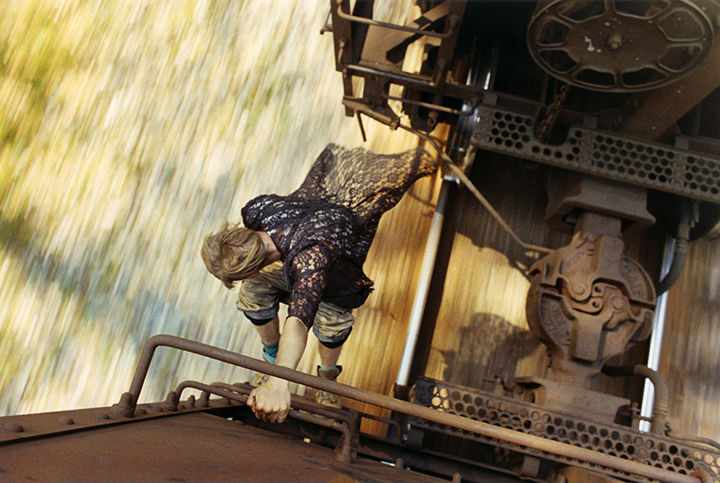
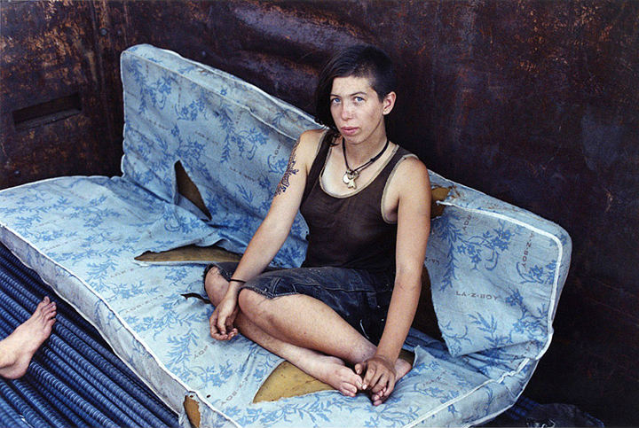

第一次从朋友那里接触到宝丽莱SX-70相机开始，Mike Brodie就被影像的美好迷住了全部。Mike Brodie是来自美国亚利桑那州的年轻摄影师，他历经数年跨越美国46个州，用相机记录下火车流浪者的生活，他们并非是真正意义上的流浪，而是一群后工业、后朋克、集合数字与时尚意识的铁轨冒险青年。
下面就让我们一起去看看Mike Brodie和这些“流浪”青年的火车旅行！
2003年，18岁的Mike Brodie带着他的SX-70，走遍了美国的铁路并且拍摄了他所接触的火车流浪者。他们接受他，因为他也是其中之一——一群有着类似梦想的铁轨冒险年轻流浪者。

Mike Brodie将46个州近5万英里的路程一点一滴的纪录在快门之下，也许是他浑然的游荡灵魂，细腻刻划出那份流浪的坚韧孤独氛围，让他在短短的时间内，获得国际艺廊的关切注目。

从他的照片中可以明显看出，那些年轻的男孩女孩们并非传统意义上的流浪。他们可能一段时间居住在废弃的建筑中或者在临时庇护所中安营扎寨，但是他们会上Facebook和myspace。
他们也许会乞讨一些零花钱和食物或者用在公路上死去的动物做一顿蔬菜烩肉，但是他们都有手机。
他们可能不经常洗澡，也可能缺乏基本的厕所设施，但他们具有一定的流浪者风格并且了解时尚文化。